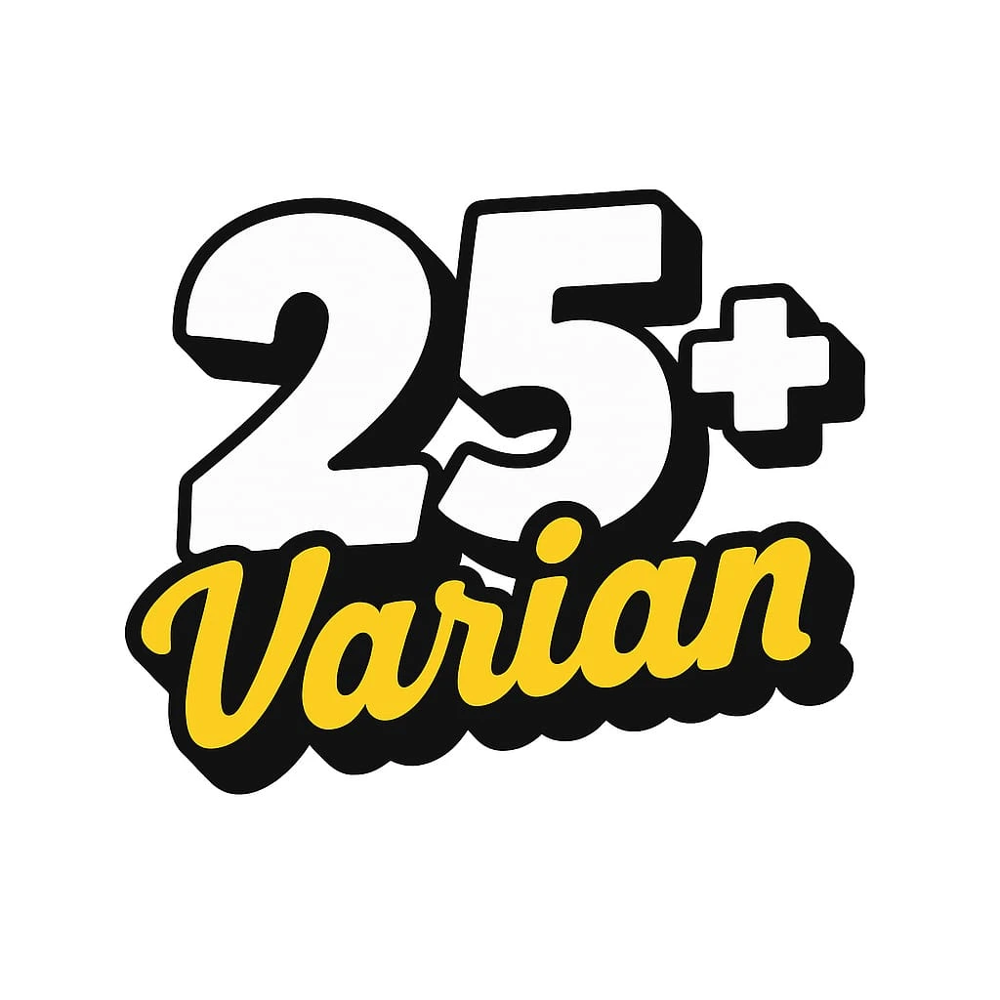
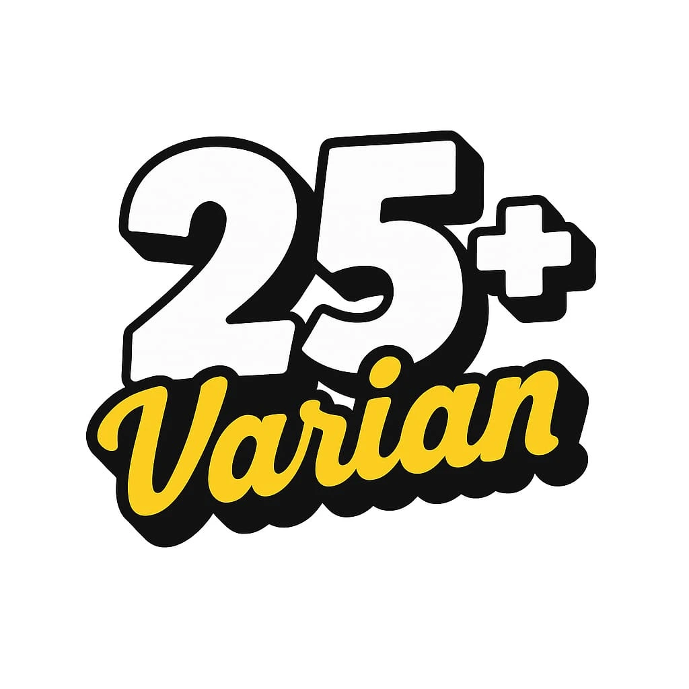
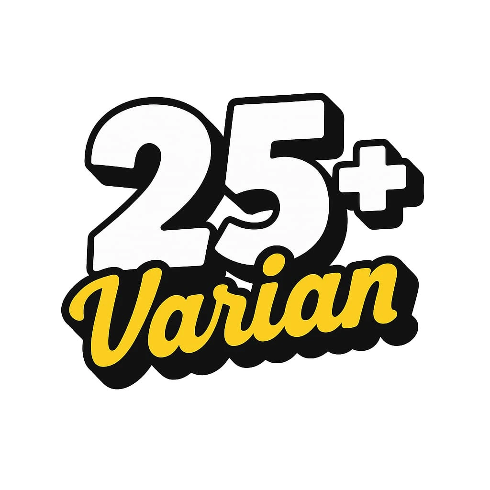

📍 Jl. Wahidin Sudiro Husodo No.22, Bramen, Sekarsuli, Kec. Klaten Utara, Kabupaten Klaten, Jawa Tengah 57432
📱 0888-0269-3653 | 📧 dimsumlicious@gmail.com
Dimsum merupakan makanan kecil yang sudah tidak asing lagi bagi penduduk Indonesia, makanan yang berasal dari negeri China ini banyak kita temukan di berbagai resto dengan berbagai varian menu dan harga yang beragam pula...
Hadirnya Dimsumlicious di tengah-tengah masyarakat Klaten menjadi solusi untuk menghadirkan dimsum dengan harga terjangkau, cita rasa yang lezat, dan pilihan varian menu yang disajikan dalam konsep prasmanan.
Sebagai spesialis dimsum prasmanan di Klaten, Dimsumlicious hadir dengan konsep gerobak prasmanan, menyajikan lebih dari 25 varian menu berbeda dalam klakat yang menarik.
Dengan lebih dari 25+ varian menu, Dimsumlicious sangat cocok menjadi pilihan jajanan untuk semua kalangan, khususnya anak muda Klaten yang senang mencoba berbagai menu makanan kekinian.
#Pelopor Dimsum Klaten

📍 Jl. Wahidin Sudiro Husodo No.22, Bramen, Sekarsuli, Kec. Klaten Utara, Kabupaten Klaten, Jawa Tengah 57432
📱 0888-0269-3653 | 📧 dimsumlicious@gmail.com